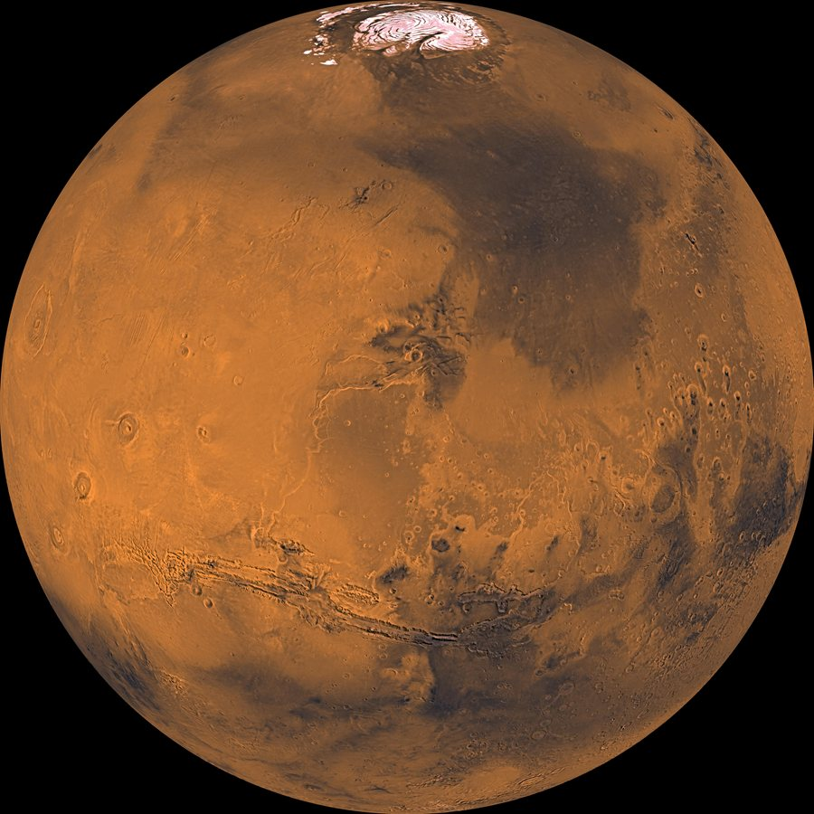

Marte é o quarto planeta a partir do Sol. É um mundo frio, desértico e empoeirado, com uma atmosfera muito fina. Há sinais de que no passado teve rios e lagos, por isso é um dos principais alvos na busca por vida fora da Terra.
Média de cerca de -65 °C (de -153 °C a 20 °C)
6.779 km de diâmetro (cerca de metade da Terra)
Entre 55 milhões e 401 milhões de km